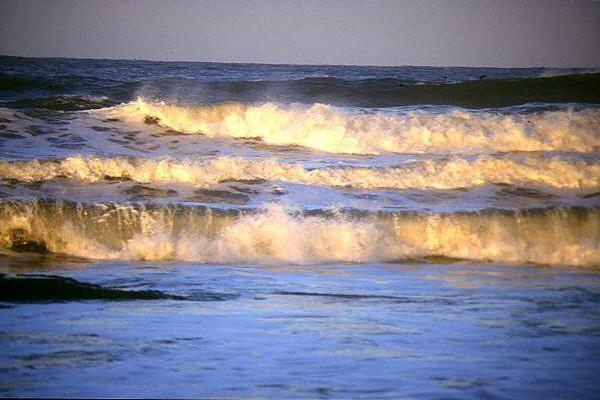
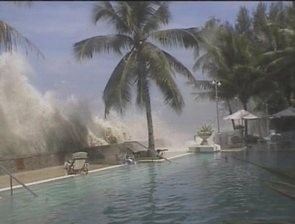
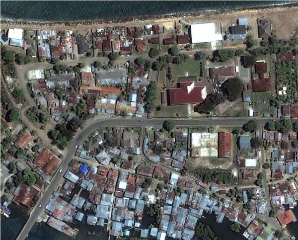
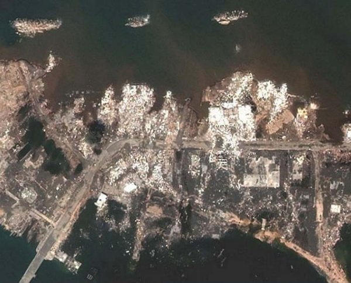

Provocarea 1-1
Provocarea 1-1
Cum am putea oare supravieţui unor cutremure şi valuri uriaşe devastatoare?
Spectacolul valurilor mării este fascinant (figura 1−1).

Fig. 1-1. Valurile mării.
Valurile răsar parcă de nicăieri şi se lovesc de ţărm iarăşi şi iarăşi, fără încetare.
Câteodată însă, valurile sunt uriaşe (figura 1−2).

Fig. 1-2. Val uriaş (tsunami).
Aşa s−a întâmplat în decembrie 2004, în Sumatra (o insulă din arhipeleagul indonezian), până atunci un adevărat paradis turistic (figura 1−3).

Fig. 1-3. Vedere aeriană a unei localităţi din Sumatra, înainte de a fi lovită de valurile uriaşe.
Un cutremur submarin a pus în mişcare imense cantităţi de apă, care s−au năpustit asupra ţărmurilor, distrugând totul în cale (figura 1−4).

Fig. 1-4. Aceeaşi localitate, distrusă complet de valurile uriaşe.
Peste două sute de mii de oameni au pierit în urma devastărilor produse de valurile uriaşe din decembrie 2004!
Provocarea 1-1
Cum am putea oare supravieţui unor cutremure şi valuri uriaşe devastatoare?
 Înţelegând cât mai profund astfel de mişcări de legănare, cum sunt cele ale pământului şi ale apei, putem găsi soluţii pentru sporirea siguranţei şi
confortului vieţii noastre!
Înţelegând cât mai profund astfel de mişcări de legănare, cum sunt cele ale pământului şi ale apei, putem găsi soluţii pentru sporirea siguranţei şi
confortului vieţii noastre!
Nimeni nu ştie când şi unde se va produce următorul cutremur şi nici dacă următorul cutremur submarin va determina apariţia valurilor uriaşe (nu toate cutremurele submarine produc astfel de valuri).
Acest capitol te va ajuta să începi să înţelegi de ce se cutremură Pământul, cum se formează valurile şi multe altele asemenea, pregătindu−te astfel să contribui şi tu la controlul mişcărilor de legănare, numite generic oscilaţii şi unde mecanice.